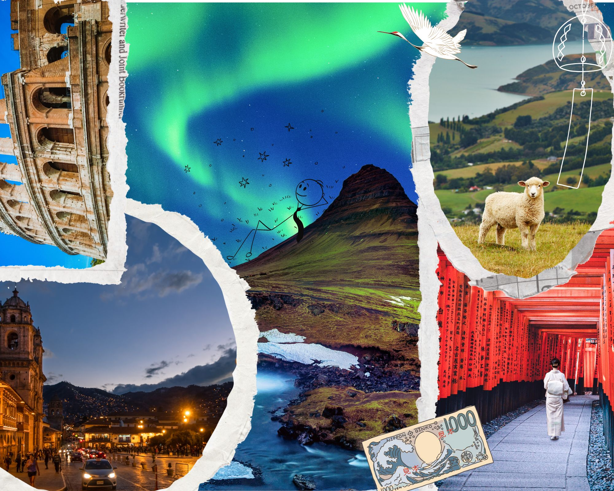

Prince
.
Home
Biography
Skills
Resume
Gallery
My Beat
Movie Shows
TV Shows
Dream Places
Bucket List
Dream Places to Visit
Exploring the destinations that captivate my imagination and inspire my wanderlust
Click any image below

Japan - Land of tradition and innovation
Italy - Art, history, and cuisine
Peru - Ancient civilizations and natural wonders
New Zealand - Breathtaking landscapes
Iceland - Fire and ice wonderland